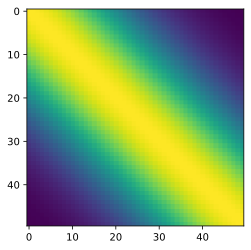

import numpy as np
from scipy.stats import multivariate_normal
%matplotlib inline
%config InlineBackend.figure_format = 'svg'
import matplotlib
#matplotlib.rcParams['figure.figsize'] = (8,6)
from matplotlib import pyplot as plt
import GPyIn this notebook, we cover multi-output GPs. The presentation follows the excellent video from GPSS
ICM
\(u \sim GP (0, k)\)
sample from u to get a sample \(u^1\)
\(f_1(x) = a^1_1 u^1(x)\)
\(f_2(x) = a^1_2 u^1(x)\)
X = np.linspace(-3.,3., 50)kernel = GPy.kern.RBF(input_dim=1, variance=1., lengthscale=2.)kernel| rbf. | value | constraints | priors |
| variance | 1.0 | +ve | |
| lengthscale | 2.0 | +ve |
def jitter(C, j = 1e-6):
return C + np.eye(len(C))*jcov = jitter(kernel.K(X.reshape(-1, 1)))plt.imshow(cov)
mvn = multivariate_normal(cov=cov)u1 = mvn.rvs(random_state=0)
plt.plot(X, u1)
a11 = 0.9
a12 = 0.7
a = np.array([a11, a12]).reshape(-1, 1)aarray([[0.9],
[0.7]])B = a@a.T
Barray([[0.81, 0.63],
[0.63, 0.49]])cov_f = np.kron(B, cov)plt.imshow(cov_f, cmap='Purples')
plt.colorbar()f_sample = multivariate_normal(cov=jitter(cov_f)).rvs(size=500)
f1_samples, f2_samples = f_sample[:, :50], f_sample[:, 50:]#plt.plot(X, u1, label="u1")
for i in range(2):
plt.plot(X, f1_samples[i], color='g')
plt.plot(X, f2_samples[i], color='r' )
f1_samples[i]/f2_samples[i]array([1.28521323, 1.2870487 , 1.28169798, 1.29387391, 1.28381124,
1.29063798, 1.28399272, 1.28787108, 1.27634933, 1.29367057,
1.19405718, 0.81421541, 1.29366628, 1.23932848, 1.28601429,
1.31178054, 1.27596873, 1.28139033, 1.28548127, 1.28874727,
1.288544 , 1.28851575, 1.27706874, 1.28929381, 1.27167387,
1.30216154, 1.28769528, 1.28397652, 1.2896767 , 1.29357874,
1.28743778, 1.28867757, 1.29135504, 1.28085954, 1.27832016,
1.29113682, 1.28346876, 1.28115477, 1.28579679, 1.28664088,
1.2836771 , 1.28690568, 1.28521466, 1.28474094, 1.28147929,
1.28752966, 1.28577663, 1.28154063, 1.28312776, 1.2869964 ])## Learning in MOGP setting
f1_dataset = f1_samples[4]
f2_dataset = f2_samples[4]plt.plot(X, f1_dataset, label='f1')
plt.plot(X, f2_dataset, label='f2')
plt.legend()## What all we want to learn:
# 1. GP kernel parameters
# 2. a11, a12import jax
import jax.numpy as jnp
from jax.config import config
config.update("jax_enable_x64", True)
import tensorflow_probability.substrates.jax as tfpf = jnp.hstack([f1_dataset, f2_dataset])def sqexp(a, b, var=1.0, ls=4):
diff = (a-b)/ls
d = jnp.sum(diff ** 2)
return var*jnp.exp(-0.5 * d)
def all_pairs(f):
f = jax.vmap(f, in_axes= (None, 0, None, None))
f = jax. vmap (f, in_axes= (0, None, None, None))
return fkernel.K(X.reshape(-1, 1))array([[1. , 0.99812754, 0.99253116, ..., 0.01592046, 0.01332383,
0.011109 ],
[0.99812754, 1. , 0.99812754, ..., 0.01895197, 0.01592046,
0.01332383],
[0.99253116, 0.99812754, 1. , ..., 0.02247631, 0.01895197,
0.01592046],
...,
[0.01592046, 0.01895197, 0.02247631, ..., 1. , 0.99812754,
0.99253116],
[0.01332383, 0.01592046, 0.01895197, ..., 0.99812754, 1. ,
0.99812754],
[0.011109 , 0.01332383, 0.01592046, ..., 0.99253116, 0.99812754,
1. ]])np.allclose(np.array(all_pairs(sqexp)(X, X, 1.0, 2.0)), kernel.K(X.reshape(-1, 1)))Truerank = 1
output_dim = 2
A = jax.random.normal(key=jax.random.PRNGKey(0), shape=(output_dim,rank))/10.0
A@A.T, A(DeviceArray([[ 0.03298171, -0.01370936],
[-0.01370936, 0.00569851]], dtype=float64),
DeviceArray([[ 0.18160867],
[-0.07548848]], dtype=float64))output_dim = 2
rank = 4
A = jax.random.normal(key=jax.random.PRNGKey(0), shape=(output_dim,rank))/2.0
A@A.TDeviceArray([[ 1.24957827, -0.04698574],
[-0.04698574, 0.57577417]], dtype=float64)def covariance_f(var, ls, A):
"""
A: (output_dim, rank)
A can be generated as:
A = jax.random.normal(key=jax.random.PRNGKey(0), shape=(output_dim,rank))
"""
B = A@A.T
cov = all_pairs(sqexp)(X, X, var, ls)
cov_f = jitter(jnp.kron(B, cov))
return cov_fdef cost(var, ls, A):
cov_f = covariance_f(var, ls, A)
dist = tfp.distributions.MultivariateNormalFullCovariance(loc = jnp.zeros_like(f), covariance_matrix = cov_f)
return -dist.log_prob(f)plt.imshow(covariance_f(1.0, 2.0, A), cmap='Purples')
plt.colorbar()cost(1.0, 2.0, A)DeviceArray(-431.60947116, dtype=float64)cost(1.0, 1.0, A)DeviceArray(-387.35267033, dtype=float64)grads = jax.grad(cost, argnums=[0, 1, 2])(0.1, 1.0, A)
var = 0.1
ls = 1.0
lr = 1e-3for i in range(500):
grads = jax.grad(cost, argnums=[0, 1, 2])(var, ls, A)
var = var-lr*grads[0]
ls = ls-lr*grads[1]
A = A-lr*grads[2]
if i%100==0:
print(i, cost(1.0, 1.0, A), var, ls)0 -387.06097276826193 0.500429427376359 1.0913929924306696
100 -306.72979544101435 3.6414838350262055 2.363476650308803
200 -305.64842462218047 3.514293617054404 2.3873529546968477
300 -304.7976816183849 3.379382170959892 2.403204858135416
400 -304.0941499412901 3.236859846397818 2.4140771572105426C_learnt = covariance_f(var, ls, A)
plt.imshow(C_learnt, cmap='Purples')
plt.colorbar()dist = tfp.distributions.MultivariateNormalFullCovariance(covariance_matrix=C_learnt)
samples_f1 = dist.sample(sample_shape=(10, ), seed = jax.random.PRNGKey(0))
for s in samples_f1:
plt.plot(X, s[:50], color='k')
plt.plot(X, f1_dataset)
SLFM
def covariance_f_SLFM(var1, ls1, A1, var2, ls2, A2):
"""
"""
B1 = A1@A1.T
B2 = A2@A2.T
cov1 = all_pairs(sqexp)(X, X, var1, ls1)
cov2 = all_pairs(sqexp)(X, X, var1, ls1)
cov_f = jitter(jnp.kron(B1, cov1) + jnp.kron(B2, cov2))
return cov_frank = 1
a1 = jax.random.normal(key=jax.random.PRNGKey(0), shape=(output_dim,rank))/2.0
a2 = jax.random.normal(key=jax.random.PRNGKey(0), shape=(output_dim,rank))/2.0
C_SLFM = covariance_f_SLFM(1.0, 2.0, a1@a1.T, 1.0, 4.0, a2@a2.T)plt.imshow(C_SLFM, cmap='Purples')
plt.colorbar()